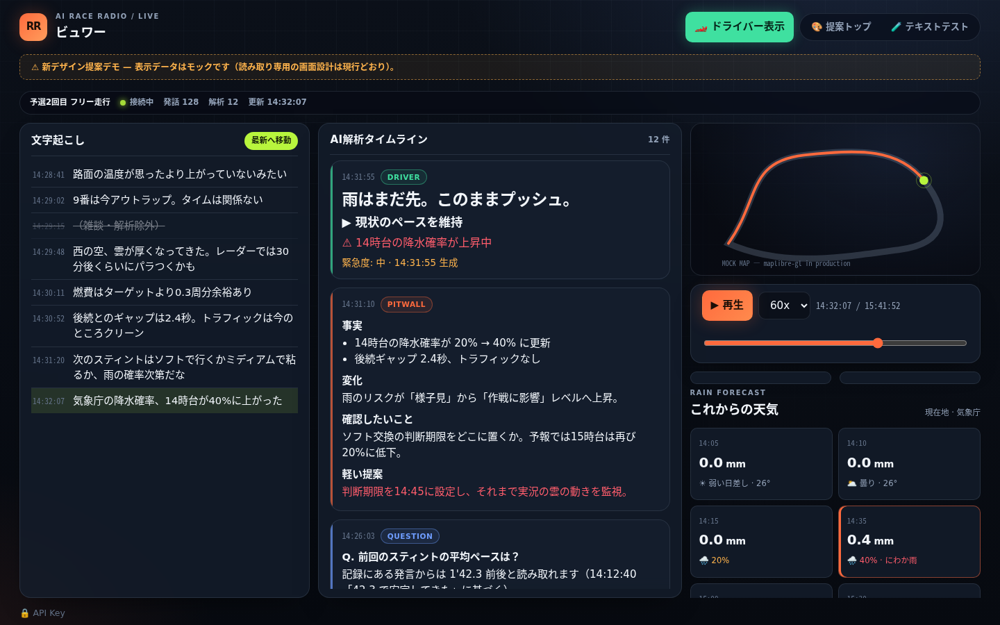
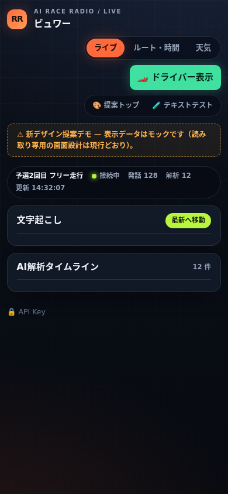
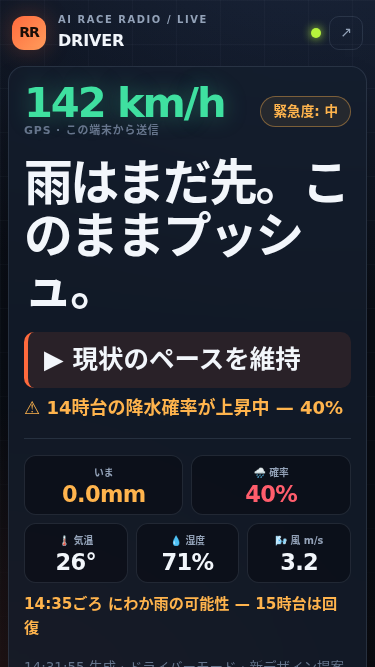
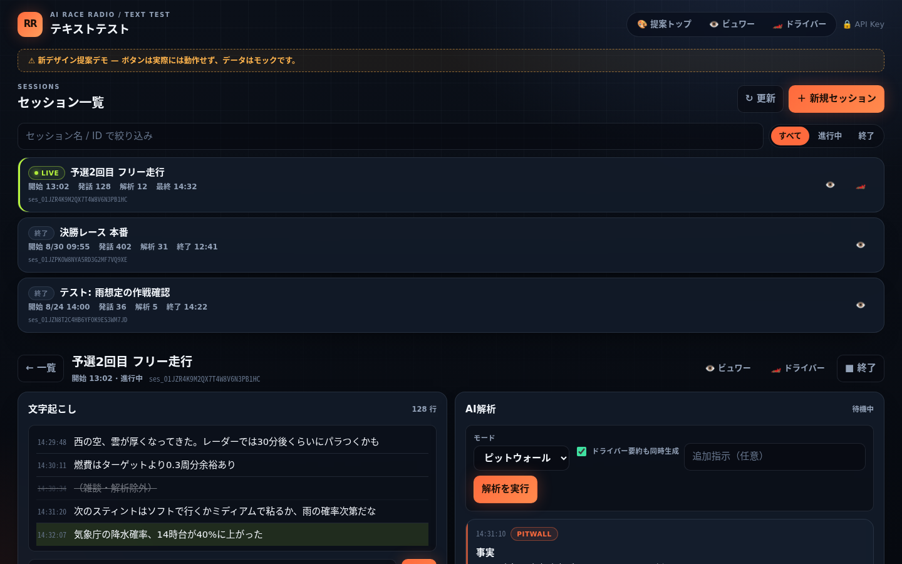

ピットの計器盤としての
情報密度と一瞥性。
現行UIの役割分担（ピット＝ビュワー／車内＝ドライバー／開発＝テキストテスト、 書き込み権限の分離、モード別の色づかい）はそのままに、 ガラス質感の階層表現・ロールごとに磨き上げたアクセント・等幅数字の計器タイポグラフィで 「レース中に3メートル離れても読める」UIを目指しました。
🪟奥行きは透過で
透過パネル + 背景ぼかし + ヘアライン境界で、重ねた情報の前後関係が分かる。背景にはテレメトリのグリッドを薄く敷く。
🎨1ロール1色
橙=ピット／主操作、緑=ドライバー／安全、青=質問、ライム=進行中。緊急度は黄→赤の階段。色だけで意味が通じる。
🔢計器の文字
動く数値はすべて等幅数字。見出しは引き締めたディスプレイ書体、ラベルは小さな大文字で階層を作る。
📐同じ文法
どの画面も「見出し行＋本文＋操作行」の同じペイン文法。画面を移っても物の位置が変わらない。
PIT / READ-ONLY
ビュワー
ライブ・ルート・天気を一枚のガラス盤に。幅1024px以上の「ピット表示」ではタブを廃して全カラム同時表示。ステータスバーは接続状態を光るドットで示す。
デモを開く →IN-CAR / GLANCE
ドライバー
速度・緊急度・見出しだけの特大表示は維持しつつ、コントラストと字間を再調整。iPhone SE でスクロールなし。要素の位置は常に固定。
デモを開く →DEV / FULL ACCESS
テキストテスト
セッション一覧はカードグリッドから密度の高いリストへ。詳細は従来どおり左＝文字起こし・右＝AI解析で、エントリのマークアップはビュワーと共有。
デモを開く →スクリーンショット
ローカルに clone がなくても、このページか GitHub 上の server/public/design-demo/screenshots/ で確認できます。




現行システム要件との対応
| 要件 | デモでの扱い |
|---|---|
| ビュワーは閲覧専用 | 新ビュワーにも書き込み操作を置かない。APIキー入力はフッタの折りたたみに退避。 |
| ピット表示（≥1024px） | 文字起こし・解析・地図・これからの雨を1グリッドに同時表示。タブは消える。 |
| ドライバー画面は一瞥性最優先 | グリッドのテンプレートエリアを固定し、要素の有無で位置が動かない構造を継承。 |
| 解析4モードの識別 | pitwall 橙 / driver 緑 / question 青。タイムラインの左エッジラインで示す。 |
| 除外行は残す | 取り消し線＋半透過を維持。AIが何を読み飛ばしたか常に見える。 |
| HTTPS / tailscale serve | デモは file:// 直開きでも既存サーバーの静的配信経由でも同じ見た目で動くため、本番の配信経路・証明書の前提に影響しない。 |